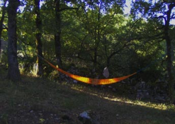

Cathy GARCIA :
Poète-éditrice née le 16 juin 1970 à Hyères .
Pendant une dizaine d’année, elle a été artiste de
théâtre de rue et a travaillé avec, entre autre, la compagnie tarnaise Plasticiens Volants comme chanteuse, artificière, comédienne, technicienne en décor - décors gonflables géants et marionnettes gonflables géantes et volantes - responsable de communication … Elle a participé a de rombreuses tournées en France et à l’étranger, au cours desquelles elle écrira ses Chroniques de route – Journal intime en tournée 1997-2002 (inédits). En 2001, elle publie deux recueils et une plaquette aux Ed. Clapàs et vient vivre dans le Lot, tout en continuant à travailler et à voyager pour les spectacles.
Devenue maman en février 2003, elle en profite pour se livrer pleinement à l'écriture et en juillet, elle lance le numéro 0 de NOUVEAUX DÉLITS, revue artisanale de poésie vive et dérivés, imprimée sur papier recyclé. Revue bimestrielle jusqu’en janvier 2008, elle est maintenant trimestrielle. Un blog de présentation est accessible à : http://larevuenouveauxdelits.hautetfort.com/ |
|
 |
«Avoir dit une première fois mon admiration absolue pour la poésie de Cathy Garcia, était sans doute on ne peut plus naturel : sous le choc de la lecture de Salines, dans l’émotion de la découverte de sa
façon de dire l’être au monde, si proche de mon sentiment profond, dans la grâce et la violence alternéesd’un ruisseau des sous-bois que l’ondée peut changer en torrent, pouvais-je ne pas vibrer ? Mais par ailleurs m’étais-je assez contenu comme il se doit dans une première approche ? Avais-je pris une suffisante distance de vision ? Avais-je bien chaussé mes lunettes objectivantes ?
J’avoue que non… j’avoue que je vais récidiver, me laisser emporter par cet élan d’empathie profonde où je me plais bien mieux que dans la réticence et la contorsion critiques. Et pourquoi, en fait, ferais-je la fine bouche à lire et relire ces Chroniques du hamac, où Cathy Garcia confirme ce qui est mieux que son talent, une touche reconnaissable comme la possède un peintre, la sonorité singulière de son orchestre de chambre, son intelligence des choses passée au crible d’une sensibilité fine mais dépourvue de toute afféterie, sa sensibilité toute tendue vers la connaissance de soi-même et du monde, (...) Michel Host
|
|